コントラスト強調方法
Image Processing Toolbox™ は、さまざまな画像強調ルーチンを含んでいます。3 つの関数 imadjust、histeq、および adapthisteq は、コントラストの強調に特に適しています。このデモは、グレースケールとトゥルーカラー イメージの強調での使用を比較します。
目次
手順 1:イメージの読み込み
2 つのグレースケール イメージ pout.tif および tire.tif を読み込みます。また、インデックス付き RGB イメージ shadow.tif も読み込みます。
pout = imread('pout.tif'); tire = imread('tire.tif'); [X map] = imread('shadow.tif'); shadow = ind2rgb(X,map); % convert to truecolor
手順 2:イメージのリサイズ
イメージの比較を簡単に行うには、同じ幅を持つようにイメージをリサイズします。その高さをスケーリングして、縦横比を維持します。
width = 210;
images = {pout, tire, shadow};
for k = 1:3
dim = size(images{k});
images{k} = imresize(images{k},[width*dim(1)/dim(2) width],'bicubic');
end
pout = images{1};
tire = images{2};
shadow = images{3};
手順 3:グレースケール イメージの強調
既定の設定を使用して、以下の 3 つの方法の有効性を比較します。
- imadjust は、既定の設定では、データの 1% が入力データの低い強度と高い強度で飽和するように、入力強度イメージの値を新しい値にマッピングすることでイメージのコントラストを高くします。
- histeq は、ヒストグラム均等化を行います。出力イメージのヒストグラムが指定のヒストグラム (既定の設定では一様分布) にほぼ一致するように、強度イメージの値を変換することにより、イメージのコントラストを強調します。
- adapthisteq は、コントラストに制限を付けて適応ヒストグラム均等化を実行します。histeq とは異なり、全体のイメージよりもむしろ小さなデータ領域 (タイル) を処理します。各出力領域のヒストグラムは指定のヒストグラム (既定の設定では一様分布) とほぼ一致するように各タイルのコントラストが強調できます。コントラストの強調は、イメージ内に存在するノイズの増幅を避けるために制限されます。
pout_imadjust = imadjust(pout); pout_histeq = histeq(pout); pout_adapthisteq = adapthisteq(pout); imshow(pout); title('Original'); figure, imshow(pout_imadjust); title('Imadjust');
 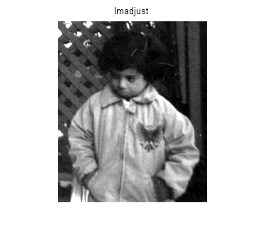
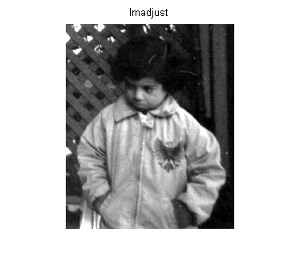 figure, imshow(pout_histeq); title('Histeq'); figure, imshow(pout_adapthisteq); title('Adapthisteq');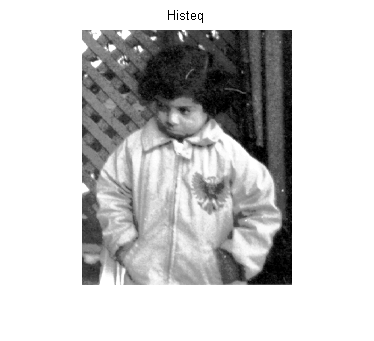 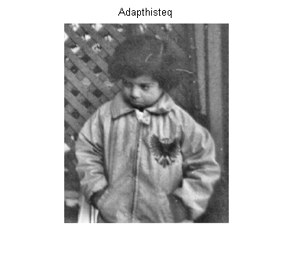
tire_imadjust = imadjust(tire); tire_histeq = histeq(tire); tire_adapthisteq = adapthisteq(tire); figure, imshow(tire); title('Original'); figure, imshow(tire_imadjust); title('Imadjust');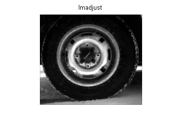
figure, imshow(tire_histeq); title('Histeq'); figure, imshow(tire_adapthisteq); title('Adapthisteq');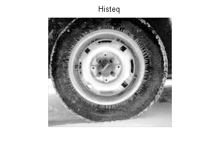

imadjust はタイヤのイメージにはほとんど影響を与えませんが、膨れっ面のイメージの場合には大きな変化をもたらしていることに注意してください。pout.tif および tire.tif のヒストグラムのプロットにより、最初のイメージのほとんどのピクセルがヒストグラムの中心に集中していることが明らかです。一方、tire.tif の場合、値は既に最小値 0 から最大値 255 の間に広がっています。そのため、imadjust は、イメージのコントラストの調整には有効ではありません。
figure, imhist(pout), title('pout.tif'); figure, imhist(tire), title('tire.tif');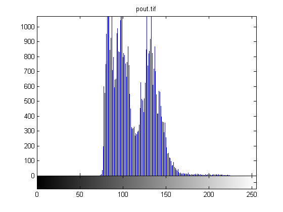

一方、ヒストグラム均等化は、両方のイメージを変化させます。以前は隠れていた多くの特徴、特にタイヤの破片粒子が露出します。残念ながら、同時に、強調は両方のイメージのいくつかの領域を過飽和させます。タイヤの中心、子供の顔の部分、およびジャケットが白っぽくなったことに注目してください。
タイヤのイメージに注目すると、イメージの他の領域のコントラストを強調しながらも、車輪の中心は、ほぼ同じ明るさにとどまることが望ましいです。このようにするには、異なる変換をイメージの異なる部分に適用する必要があります。adapthisteq で実行されるコントラストに制限を付けた適応ヒストグラム均等化手法がこれを実現します。アルゴリズムは、イメージの部分を解析し、適切な変換を計算します。コントラスト強調のレベルの制限も設定できるので、histeq の基本のヒストグラムの均等化方法による過飽和を防ぐことができます。これは、このデモで最も高度な手法です。
手順 4:カラー イメージの強調
カラー イメージのコントラスト強調は通常、イメージを色空間に変換することにより行います。色空間では、イメージの強調をいずれかのコンポーネントとして持っています。たとえば、色空間の 1 つは L*a*b* です。色変換関数を使用して、イメージを RGB から L*a*b* 色空間に変換し、イメージの明度レイヤ 'L*' で作業します。明度の操作は、元の色を維持しながらも、ピクセルの強度に影響を与えます。
srgb2lab = makecform('srgb2lab'); lab2srgb = makecform('lab2srgb'); shadow_lab = applycform(shadow, srgb2lab); % convert to L*a*b* % the values of luminosity can span a range from 0 to 100; scale them % to [0 1] range (appropriate for MATLAB(R) intensity images of class double) % before applying the three contrast enhancement techniques max_luminosity = 100; L = shadow_lab(:,:,1)/max_luminosity; % replace the luminosity layer with the processed data and then convert % the image back to the RGB colorspace shadow_imadjust = shadow_lab; shadow_imadjust(:,:,1) = imadjust(L)*max_luminosity; shadow_imadjust = applycform(shadow_imadjust, lab2srgb); shadow_histeq = shadow_lab; shadow_histeq(:,:,1) = histeq(L)*max_luminosity; shadow_histeq = applycform(shadow_histeq, lab2srgb); shadow_adapthisteq = shadow_lab; shadow_adapthisteq(:,:,1) = adapthisteq(L)*max_luminosity; shadow_adapthisteq = applycform(shadow_adapthisteq, lab2srgb); figure, imshow(shadow); title('Original'); figure, imshow(shadow_imadjust); title('Imadjust');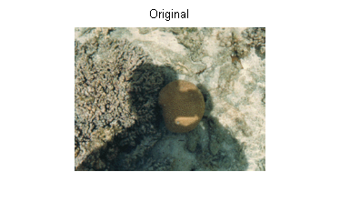 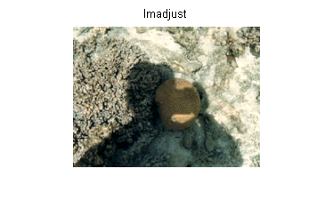
figure, imshow(shadow_histeq); title('Histeq'); figure, imshow(shadow_adapthisteq); title('Adapthisteq');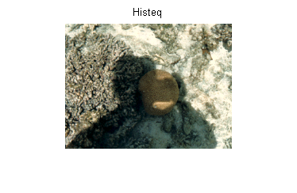 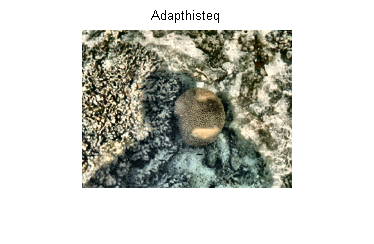